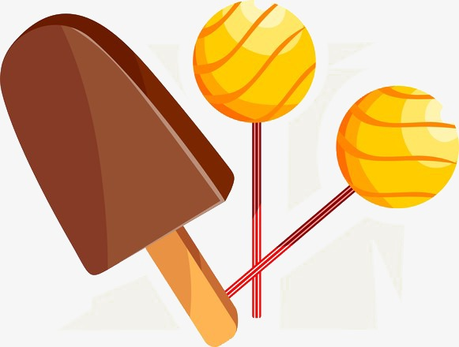
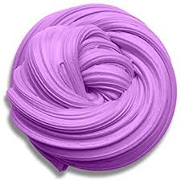

Plant Person recenserar:
Glass och klubba som räcker för alltid (Utsätt inte för värme) Betyg: * 1/5
Så fort jag tog bort pappret smälte glassen direkt. Klubban var som smet när jag började suga på den, och det fastnade överallt i min mun. Det ända bra jag kan säga att det lila jag hann smaka var faktist gott. Jag rekomenderar starkt att ni inte köper dessa. Det är en skamm och jag förväntar mig pengarna tillbaks.
________________________________________________________________________________________________________________________________________________
;3; :D xD 8) B) :S :3 ;) recenserar:
Leksaksroboten (kan avfyra vad som helst) Betyg: ***** 5/5
Jag älskar "Leksaks roboten" som kan avfyra vad som helst. Jag prankade min granne och avfyra blomkrukor på honom varje gång han gick ut genom sin dörr. Han blev riält skadad i skallen så det var en succe. Sen började jag kasta toaletter. Jag lyckades krossa både hans hus och hans frus ben. Sen dödade jag hans son också Den dagen kom han hem sent men det var värt det för att se hans reaktion på vad jag hade gjort med hans hus och familj. Han tyckte inte om mitt prank så jag försökte igen genom att avfyra toalett papper på hans sons begravning. Men då fick jag bara massa hat. Varför får jag fortfarande hat? Om du vill se allt detta så kan du gå in på min youtube kanal Prank Patrol här. https://www.youtube.com/channel/UCTs_XwS4dsXV5IgfeaoVbYQ
100% värt pengarna. DU måste köpa den här. Perfekt om du vill pranka din granne.
________________________________________________________________________________________________________________________________________________

Ananus recenserar:
Slime (växer i varmt och krymper i kallt vatten) Betyg: *1/5
DÅLIG! Effekten håller i sig tills minsta spår av fukt är borta. Min slajm krympte tills den inte fanns och växte tills mitt hus förstördes. Men jag kan ändå inte säga att det är en skam, MEN KÖP DEN INTE!
________________________________________________________________________________________________________________________________________________

BeanyWeiney recenserar:
Fidget (spinner som kan snurra för alltid) Betyg: ** 2/5

Den kan snurra för alltid vilket är ganska coolt. Men den kan inte slura snurra. När jag skulle stoppa den första gången så sågade den sönder min hand. Sen sågade den av min systers huvud. Tips: Sätt den inte i rörelse, kan inte saktas ner.
________________________________________________________________________________________________________________________________________________

DinoAlbino recenserar:
Miniräknare (men ännu bättre) Betyg: *** 3/5
Jag tyckte det en ovanligt stor låda för en miniräknare. Men i lådan var en man, och det vissar sig att han var väldigt bra på matte. Jag vet inte om det bara är min, men han bablar. Han frågar vart han är och vad som har hänt med hans familj. Och jag måste alltid hota honom för att hann ska hjälpa mig med matte, annars funkar han bra.